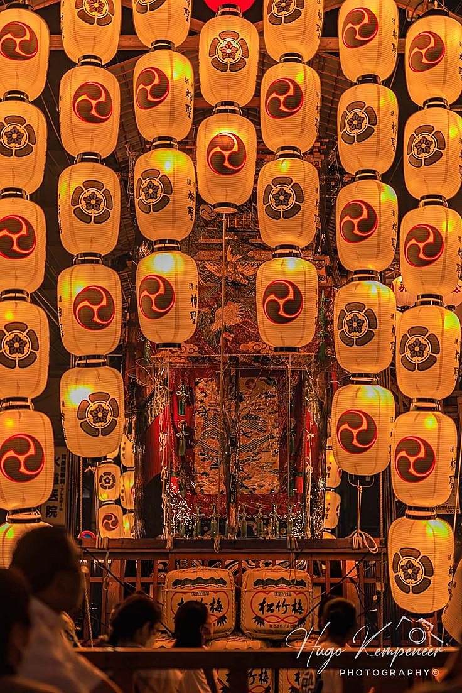
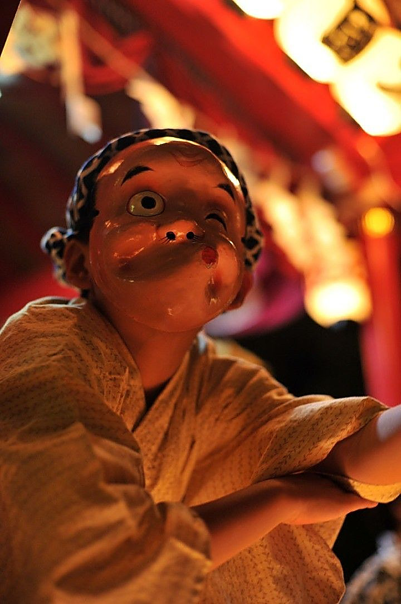
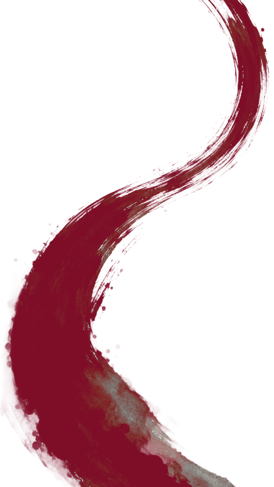

Gion Matsuri
Desde ¥5.000
Una celebración milenaria de Kioto, famosa por sus carrozas y desfiles tradicionales.
Descubrir más

Descubrí la magia de los festivales japoneses, donde la cultura y las tradiciones siguen vivas.
Explorar festivales

Los Matsuri son festivales tradicionales japoneses que celebran la historia, las creencias y las costumbres de sus comunidades. Muchos están vinculados a los santuarios sintoístas y se realizan para honrar a las divinidades, agradecer las cosechas o celebrar los cambios de estación.
A través de desfiles, música, danzas y ceremonias, estas celebraciones reúnen a personas de distintas generaciones. Cada región conserva sus propias tradiciones, transmitidas a lo largo del tiempo, convirtiendo a los Matsuri en una expresión viva de la identidad cultural de Japón.

Inspiradas en el zorro japonés, una figura vinculada al folclore y las creencias tradicionales de Japón.
A lo largo del año, Japón celebra numerosos festivales tradicionales llamados Matsuri, donde la música, las danzas y los desfiles llenan las calles de color. Estas celebraciones reflejan sus creencias y costumbres, transmitidas de generación en generación. Descubrí los festivales más emblemáticos de Japón y la riqueza de su cultura.


Desde ¥5.000
Una celebración milenaria de Kioto, famosa por sus carrozas y desfiles tradicionales.
Descubrir más

Desde ¥6.000
Gigantescas figuras iluminadas recorren las calles de Aomori entre música, danza y color.
Descubrir más

Desde ¥3.500
El Festival de las Estrellas celebra una antigua leyenda japonesa mediante deseos y decoraciones.
Descubrir más

Desde ¥5.500
Una celebración de Tokio que reúne procesiones, música y santuarios portátiles.
Descubrir más

Desde ¥4.500
Miles de bailarines llenan las calles de Tokushima con música y coreografías tradicionales.
Descubrir más

Desde ¥5.000
Un desfile de Kioto que revive distintas épocas de Japón mediante vestimentas históricas.
Descubrir másDescubrí uno de los festivales más emblemáticos de Japón a través de una experiencia cultural en las calles de Kioto.
Ubicación: Kioto, Japón.
Fecha: Julio.
Experiencia: Recorrido cultural guiado.
Precio: Desde ¥5.000.
Reservar experienciaViví una celebración nocturna llena de enormes carrozas iluminadas, música y tradición japonesa.
Ubicación: Aomori, Japón.
Fecha: Agosto.
Experiencia: Recorrido nocturno guiado.
Precio: Desde ¥6.000.
Reservar experienciaConocé la leyenda de las estrellas y participá de una experiencia inspirada en los deseos tradicionales japoneses.
Ubicación: Sendai, Japón.
Fecha: Agosto, en Sendai.
Experiencia: Taller cultural de deseos y decoraciones.
Precio: Desde ¥3.500.
Reservar experienciaDescubrí los santuarios y las procesiones tradicionales de Tokio en un recorrido cultural.
Ubicación: Tokio, Japón.
Fecha: Mayo, principalmente en años impares.
Experiencia: Recorrido guiado por santuarios.
Precio: Desde ¥5.500.
Reservar experienciaConocé el ritmo y la energía de una de las celebraciones de danza más reconocidas de Japón.
Ubicación: Tokushima, Japón.
Fecha: Agosto.
Experiencia: Introducción a la danza tradicional.
Precio: Desde ¥4.500.
Reservar experienciaRecorré la historia de Japón a través de vestimentas y representaciones de distintas épocas.
Ubicación: Kioto, Japón.
Fecha: Octubre.
Experiencia: Recorrido histórico guiado.
Precio: Desde ¥5.000.
Reservar experienciaLa cultura japonesa va más allá de sus festivales: es un encuentro entre arte, gastronomía y tradición. Desde los sabores de sus calles hasta la elegancia de sus expresiones artísticas, cada detalle revela una herencia cultural única que sigue viva de generación en generación.

Sumergite en la magia de Japón a través de sus festivales, paisajes y tradiciones. Descubrí la energía de sus celebraciones y explorá Kioto, una ciudad donde la historia y la cultura siguen vivas.
Las tradiciones de Japón tienen muchas historias por descubrir. Escribinos para saber más.
 ↑
↑